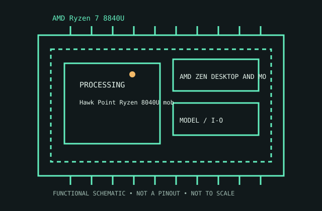

[ AMD ZEN DESKTOP AND MOBILE PROCESSORS // IDENTIFIED CPU ]
AMD Ryzen 7 8840U
Hawk Point Ryzen 8040U mobile refresh, 2023/24. 8 cores/16 threads; 3.3/5.1 GHz base/max; 24 MB cache; 15–30 W cTDP; FP7; Radeon 780M.

MODEL IDENTIFICATION: AMD Ryzen 7 8840U. Match full model suffix, stepping and package to the physical item and cited documentation.
Recorded specifications
| Cataloged model | AMD Ryzen 7 8840U |
|---|---|
| Era / family | Hawk Point Ryzen 8040U mobile refresh, 2023/24. |
| Model specifications | 8 cores/16 threads; 3.3/5.1 GHz base/max; 24 MB cache; 15–30 W cTDP; FP7; Radeon 780M. |
| Compatibility | Usually soldered BGA; OEM firmware, cooling, memory specific. |
| Variants / limits | NPU capability differs from 7840U; similar CPU/GPU layout. |
Compatibility and variants
- Usually soldered BGA; OEM firmware, cooling, memory specific.
- NPU capability differs from 7840U; similar CPU/GPU layout.
- Check system-vendor CPU support, board revision, firmware minimum, package, memory, cooling and power before installation; similar socket naming does not prove compatibility.
Service and archival notes
Record OEM, firmware, NPU software, power and memory setup.
Archive the complete marking/OPN/sSpec, stepping, physical condition, tested host revision, firmware, memory population, cooling, and test conditions. Distinguish published limits from measurements.
Sources & further reading
- Model identification/specification search — AMD Ryzen 7 8840UModel-level part identification and specification cross-reference.
- AMD technical archive — AMD Ryzen 7 8840U product familyAMD-authored processor data books and family specifications.
- AMD product-history reference — AMD Ryzen 7 8840UManufacturer history reference for product-family context.
Use the matching manufacturer data sheet revision and platform vendor’s CPU list for final fit decisions.